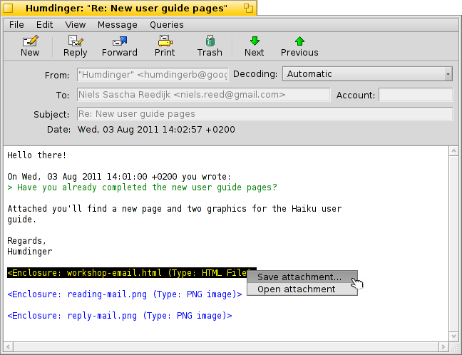
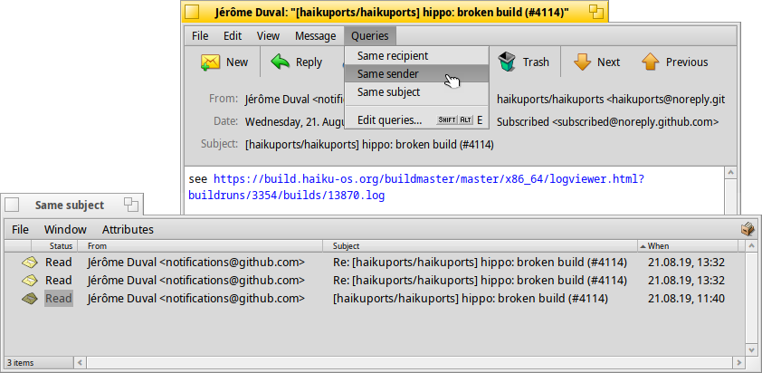
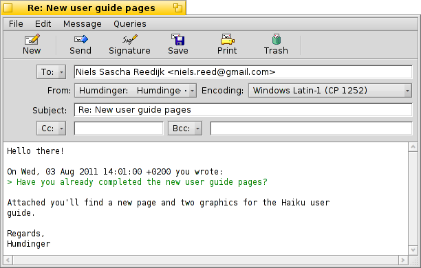
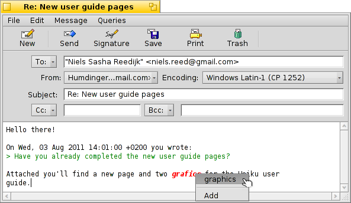
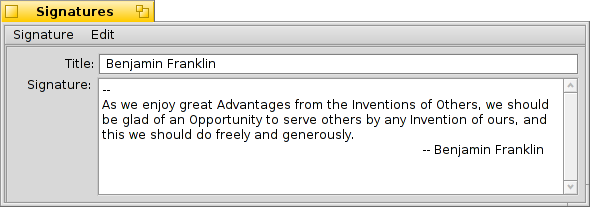
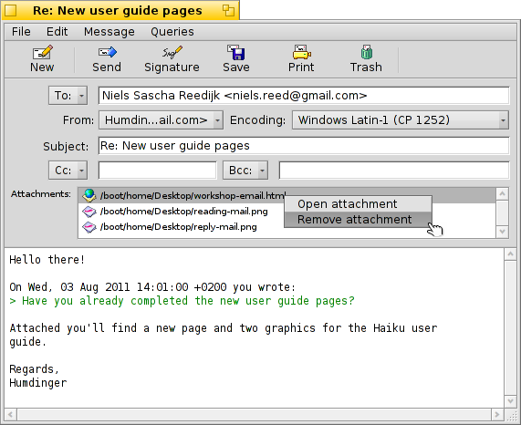
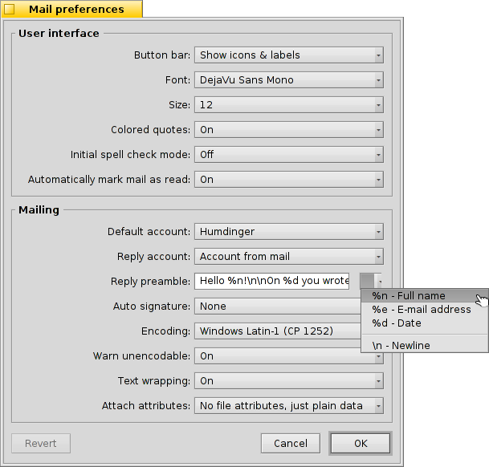

| Índice |
| Lectura de mensajes Creación de mensajes Preferencias |
 Correo
Correo
| Barra de escritorio: | ||
| Ubicación: | /boot/system/apps/Mail | |
| Configuraciones: | ~/config/settings/Mail/ ~/config/settings/Mail/Menu Links/ - los objetos puestos aquí aparecen en el menú contextual del buzón de correo ~/config/settings/Mail/signatures/ - Ubicación para almacenar las firmas ~/config/settings/Mail/status/ - Ubicación para almacenar los estados personalizados |
Correo es el visor y editor predeterminado de correos electrónicos de Haiku. No tiene nada que ver con el envío y recepción de los mensajes, que es hecho por el mail_daemon y puede ser configurado a través de las preferencias de Correo electrónico.
Esta página es una vista general de la aplicación Correo. Para más información sobre como funciona el correo electrónico en Haiku, léase Taller sobre administración de correo electrónico.
 Lectura de mensajes
Lectura de mensajes
Para abrir un correo, hace doble clic sobre un archivo de correo. La interfaz es bastante sencilla:
Verá en la parte superior una barra de menú y una barra de herramientas (opcional), debajo de ellas se encuentra un área en donde se muestran los atributos más importantes del mensaje de correo electrónico (de, para, asunto y fecha), y a continuación el cuerpo del mensaje. Si el contenido del mensaje de correo aparece con caracteres extraños o vacío, intente cambiar la desde el menú .
Si hay archivos adjuntos a un correo, se muestran en lista al final del mensaje. Si da clic derecho sobre uno, abrirá un menú contextual para (Save attachment...) o (Open attachment). También puede arrastrar y tirar directamente sobre el Escritorio u otra ventana de Tracker.
La mayoría de los elementos de la barra de herramientas y del menú se explican por si solos, así que nos enfocaremos en los aspectos destacados.
Archivo
Cuando cierra la ventana de un correo nuevo, su estado normalmente cambia de "Nuevo" a "Leído". Pero también puede establacer otros estados, escogiendolos desde el submenú . Ahí también encontrará la opción para crear sus propios estados personalizados, que son guardados en ~/config/settings/Mail/status/.
Editar
Aquí podrá encontrar la opción para abrir las (véase abajo) de Mail y un acceso directo para administrar su , que abrirán el panel de preferencias de Correo electrónico.
Ver
Raras veces tendrá la necesidad los siguientes elementos, si es que alguna vez:
| ALT H | Muestra el encabezado completo de un correo, en caso que necesite, por ejemplo, rastrear la ruta de su mensaje. | ||
| Muestra un correo en su estado bruto, o sea con todos los caracteres de control y por ejemplo, sin el coloreado de Mail para las citas o los URLs. |
Mensaje
Las diferentes opciones para responder a un mensaje pueden ocupar una pequeña explicación.
| ALT R | La respuesta estándar al servidor que le ha enviado el correo. NOTA: En caso que fuera una entrada de lista de correos, esta orden normalmente responde de vuelta a la lista de correos, no solamente a la persona que escribió esa publicación! | ||
| OPT ALT R | Este, por el otro lado, envía única y directamente a la persona que aparece en el atributo "De". | ||
| SHIFT ALT R | Contesta al remitente original, y también a todos los otros destinatarios (que estaban bajo cc) del correo original. |
The items to , y se explican solos.
Cuando haya abierto un correo desde una ventana de resultados de una consulta o desde una ventana de Tracker, y moverá al mensaje previo/siguiente en la lista.
recopila todas las direcciones de correo electrónico del encabezado y del propio cuerpo del mensaje en un submenú. Al elegir una dirección se abrirá la aplicación Personas para completar y guardar la información del contacto.
Consultas
Este menú contiene consultas que muestran todos los mensajes relacionados con el mensaje abierto actualmente. Al elegir , o abre una consulta que enumera todos los mensajes correspondientes:

Creación de mensajes
Puede crear un nuevo mensaje con la opción del menú o con su icono correspondiente de la barra de herramientas de un mensaje abierto. También puede iniciar la aplicación Correo o escoger desde el menú contextual del buzón de correo en la barra de escritorio.
La ventana es bastante similar a la que le permite leer correos. Los elementos de la barra de herramientas y del menú son levemente diferentes y los cuadros de texto deben ser llenados con la dirección de correo electrónico del destinatario, el asunto, y demás.
significa "con copia" y envía copias de su mensaje a las personas en la lista. La diferencia entre esto e incluir direcciones en el campo "Para" es que no se estará abordando directamente a las personas bajo cc, por ende señalizando que probablemente no espera respuesta de ellos.
significa "con copia oculta" que hace practicamente lo mismo que "Cc", pero esconde los destinatarios el uno del otro.
Puede ingresar diversos destinatarios separando sus direcciones con una coma. , , y son menus emergentes. Ellos contienen todas las direcciones de correo electrónico encontradas en su sistema al hacer una consulta de archivos Gente. Su atributo de "Grupo" los ordenará en submenus correspondientes.
Nos concentraremos en las características más sobresalientes de los menus.
Archivo
Puede guardar su trabajo hasta el momento con y seguir trabajando en él después. Para cargarlo de nuevo, seleccionelo desde el submenú que mostrará una lista con el resultado de todos los correos con el estado "Borrador".
Editar
Las opciones y o sus respectivos atajos ALT + / - se utilizan para añadir o remover un nivel de cita al ajustar el número de símbolos ">" al frente de las líneas citadas. Simplemente seleccione de todas las líneas el fragmento de texto al que desee señalar como cita o quitarle esa marca e invoque el elemento del menú correspondiente.
Actualmente sólo ofrece correcciones de texto en inglés, marcando en rojo palabras incorrectas o desconocidas y mostrándolas en cursiva. Si le da clic derecho en una de esas palabras, se abrirá un menú contextual que ofrece sugerencias para corregir la palabra o para la palabra al vocabulario de términos aceptados.
Luego están las opciones para abrir las de Correo (vea abajo) y un acceso directo para administrar sus , que abrirá el panel de preferencial de Correo electrónico.
Mensaje
Con la opción puede añadir texto predefinido al final de su correo. Puede escoger una específica o una al desde el submenú.
Puede crear o editar firmas existentes bajo , que abrirá una ventana donde puede ingresar el propio texto y el título de su nueva firma. Ahí, en el menú , puede encontrar elementos para una firma particular o o la firma cargada actualmente. Las Firmas deben guardarse en el archivo ~/config/settings/Mail/signatures.
Utilice y para añadir o quitar archivos como adjuntos. También puede arrastrar y soltar archivos desde una ventana de Tracker. En caso de que el archivo a adjuntar sea un archivo de texto, hay que tener cuidado de no soltarlos en el área del cuerpo del mensaje, de lo contrario su contenido se pegará como texto del mensaje.
Los archivos adjuntos se muestran debajo del cuerpo del mensaje. Puede eliminar un archivo invocando la opción correspondiente del menú contextual, o si no, seleccionarlo y presionar la tecla SUPR.
Consultas
De la misma forma que al leer un mensaje, este menú contiene consultas que muestran todos los mensajes relacionados con el que está siendo redactado. Al elegir , o se abrirá una consulta que muestra todos los mensajes que coinciden con el criterio de la consulta.
Preferencias

Las preferencias de Mail vienen en dos partes:
Interfaz de usuario
| Estas opciones permiten mostrar etiquetas bajo los íconos o esconder por completo la barra de herramientas. | ||
| Establece el tipo de letra usado para el texto del correo electrónico. | ||
| Establece el tamaño de la tipografía. | ||
| Le da colores a los diferentes niveles de textos citados. | ||
| Activa o desactiva el corrector ortográfico al iniciar. | ||
| Si cierra un mensaje con el estado de "Nuevo", puede hacer que sea automaticamente marcado como "Leído". |
Envío de correo
| Si tiene varias cuentas de correo, esto especifica cuál se debe usar de forma predeterminada cuando crea un nuevo mensaje. | ||
| Cuando responde un mensaje, puede ya sea siempre establecida en el menú emergente de arriba, o usar la , que enviará el mensaje desde la misma cuenta que recibió el mensaje original. | ||
Esto se inserta antes del texto citado en su respuesta. Puede usar diversas variables desde el menú emergente que está al lado del campo de texto. Por ejemplo: "Hola %n!\n\nOn %d escribió:\n" produce lo siguiente:
¡Hola Dr. Hawking! El Lunes, 18 de enero de 1998 02:55:16 +0800 escribió: > gracias de nuevo por la inspiración respecto a la constante cosmológica. > ...y el resto de la cita a continuación... | ||
| Añade su firma automaticamente al final del mensaje. | ||
| Establece la codificación predeterminada. | ||
| Si su mensaje contiene caracteres que no pueden ser codificados con el el método de codificación establecido actualmente, puede activar una alerta sobre ello. Esto le da la oportunidad de cambiar la codificación antes de enviarlo. En caso contrario, los caracteres no codificafles serán remplazados por símbolos de rectángulo. | ||
| inserta saltos de línea cada 76 caracteres, lo que hace que un mensaje sea más fácil de leer. | ||
| Puede elegir enviar los atributos BFS de un archivo junto a los adjuntos. Esto es útil para otros usuarios de Haiku, ya que pueden recibir un archivo "completo" (por ejemplo, los atributos completos de artista, album, y título para un archivo MP3), pero puede causar confusión (o incluso sospecha) con otros usuarios, quienes se podrían preguntar qué será ese adjunto adicional "Atributos BeOS" En caso que optara no enviar atributos con sus adjuntos, recuerde que puede incluir los archivos dentro de un ZIP antes de enviarlos, o los despojará de los atributos BFS. |